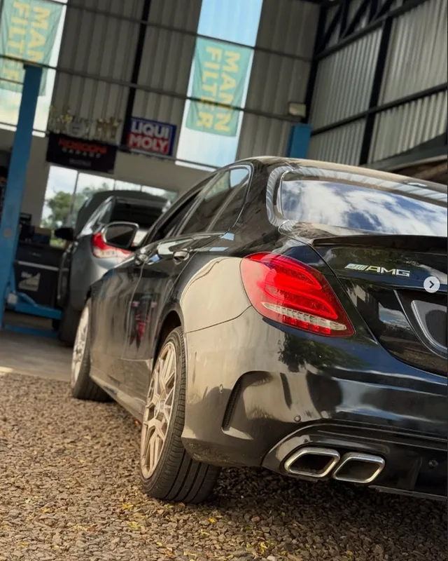
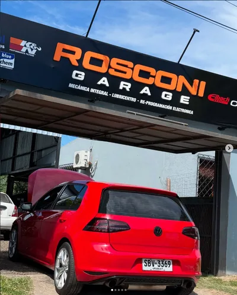
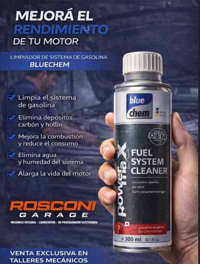
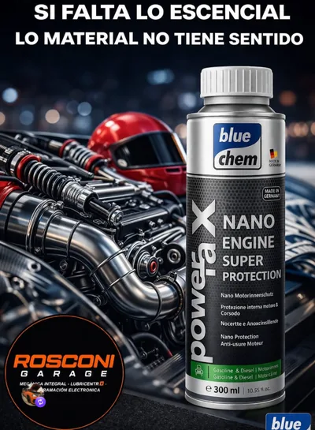

Mecánica general
Reparaciones y mantenimiento del día a día, con repuestos de primeras marcas.
- Frenos, suspensión y dirección
- Embrague y transmisión
- Cambio de piezas y mantenimiento preventivo
Garantía escrita
Taller mecánico en Artigas, Uruguay
Mecánica general e integral, service completo, lubricentro y reprogramación electrónica. Trabajo serio, diagnóstico previo y garantía escrita en todos los servicios.

Servicios del taller
Atendemos las cuatro áreas principales del taller, más el diagnóstico previo. Elegí el trabajo que necesitás y reservá el turno que te sirva.
Reparaciones y mantenimiento del día a día, con repuestos de primeras marcas.
Trabajos de mayor alcance: desarmamos, diagnosticamos y armamos con criterio de taller.
Cambio de aceite y filtros con productos de primeras marcas: Mobil, Liqui Moly y Mann Filter.
Optimización de la centralita para ganar respuesta y eficiencia, con equipos de última generación.
Antes de presupuestar, medimos: lectura de fallas y análisis computarizado.
Los tiempos de cada trabajo se confirman al reservar: en la agenda ves los horarios libres del taller y elegís el que te sirva.
Todos los trabajos se entregan con garantía escrita y repuestos identificados.
Reserva online
Elegís el día y la hora que te sirvan, dejás tus datos y el turno queda agendado. Sin llamados y sin esperar respuesta.
¿Preferís coordinarlo por WhatsApp? Escribinos.
Tus datos se usan únicamente para gestionar el turno. Si necesitás reprogramarlo, escribinos y lo movemos sin problema.
Trabajos reales
Sin fotos de stock: estos son trabajos hechos en Rosconi Garage. Tocá una foto para verla más grande.
¿Querés ver el estado de tu auto con este nivel de detalle? Reservá un diagnóstico con scanner.

El taller
Rosconi Garage está en Juan Antonio Lavalleja 730, Artigas. Ahí adentro se hace todo lo que ves en esta página: mecánica general e integral, service completo con lubricentro y reprogramación electrónica.
Promociones y tratamientos
Aditivos y protectores que aplicamos en el taller para limpiar y cuidar el motor, junto con el mantenimiento.

Se agrega al tanque y limpia todo el circuito de gasolina. Está pensado para autos que perdieron respuesta, consumen más o vienen de mucho tiempo sin mantenimiento.

Protección para el motor que se aplica junto con el cambio de aceite, para reducir el desgaste en el uso diario.
Consultanos por disponibilidad al reservar el turno.
Preguntas frecuentes
Lo que más nos preguntan por WhatsApp, respondido acá.
Sí. Trabajamos con agenda para que no queden autos esperando en la calle: reservás online eligiendo el día y la hora, o nos escribís por WhatsApp. Los turnos se piden con al menos 24 horas de anticipación.
Los trabajos que necesitan el auto elevado (mecánica integral, distribución, cajas, frenos) van a la línea A. Los service rápidos, lubricentro y diagnósticos van a la línea B, en el piso del taller. Si tenés dudas, reservá y lo confirmamos.
Depende del trabajo. Un cambio de aceite y filtros es una visita corta y se reserva por horario. Los trabajos grandes (mecánica integral, distribución) se coordinan dejando el auto: elegís a qué hora lo traés, queda en el taller y lo retirás cuando esté listo, porque puede llevar de unas horas a un día completo según lo que aparezca. Si necesitamos más tiempo, te avisamos por teléfono.
Trabajamos con primeras marcas: Mobil, Liqui Moly, Mann Filter, Blue Chem y Eibach, entre otras. Guardamos los repuestos que se cambiaron para que puedas verlos.
Sí. Todos los servicios se entregan con garantía escrita, detallando el trabajo realizado y los repuestos utilizados.
Estamos en Juan Antonio Lavalleja 730, Artigas, Uruguay. Atendemos de lunes a viernes de 08:00 a 12:00 y de 14:00 a 18:00; sábados y domingos permanecemos cerrados. La agenda online muestra los horarios libres dentro de ese horario.
Contacto
Estamos en el centro de Artigas. Podés reservar online, escribirnos o pasar por el taller.